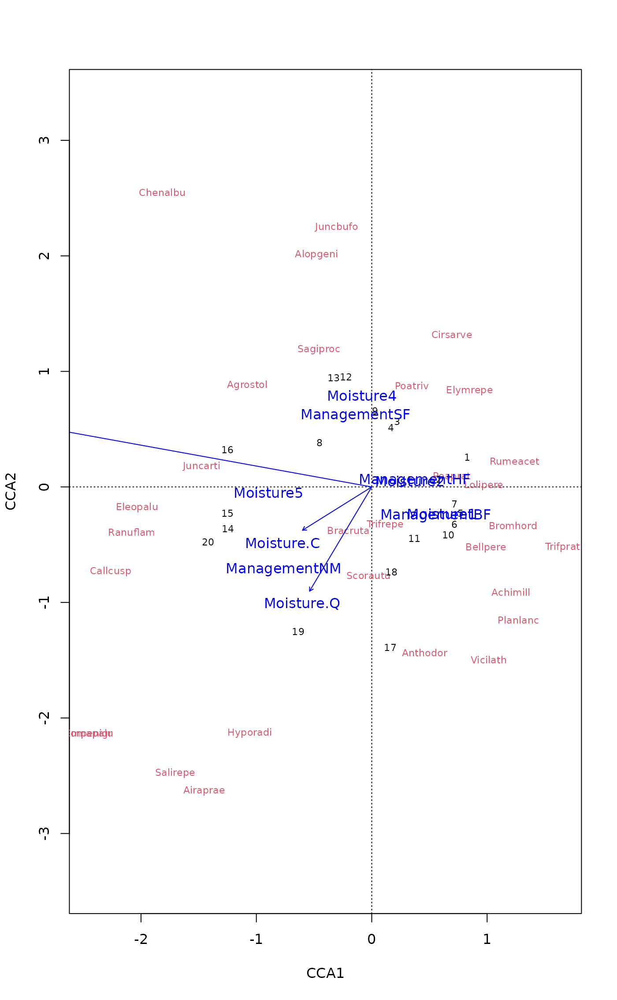

Plot or Extract Results of Constrained Correspondence Analysis or Redundancy Analysis
plot.cca.RdFunctions to plot or extract results of constrained correspondence analysis
(cca), redundancy analysis (rda) or
constrained analysis of principal coordinates (capscale).
# S3 method for cca plot(x, choices = c(1, 2), display = c("sp", "wa", "cn"), scaling = "species", type, xlim, ylim, const, correlation = FALSE, hill = FALSE, ...) # S3 method for cca text(x, display = "sites", labels, choices = c(1, 2), scaling = "species", arrow.mul, head.arrow = 0.05, select, const, axis.bp = FALSE, correlation = FALSE, hill = FALSE, ...) # S3 method for cca points(x, display = "sites", choices = c(1, 2), scaling = "species", arrow.mul, head.arrow = 0.05, select, const, axis.bp = FALSE, correlation = FALSE, hill = FALSE, ...) # S3 method for cca scores(x, choices = c(1,2), display = c("sp","wa","cn"), scaling = "species", hill = FALSE, ...) # S3 method for rda scores(x, choices = c(1,2), display = c("sp","wa","cn"), scaling = "species", const, correlation = FALSE, ...) # S3 method for cca summary(object, scaling = "species", axes = 6, display = c("sp", "wa", "lc", "bp", "cn"), digits = max(3, getOption("digits") - 3), correlation = FALSE, hill = FALSE, ...) # S3 method for summary.cca print(x, digits = x$digits, head = NA, tail = head, ...) # S3 method for summary.cca head(x, n = 6, tail = 0, ...) # S3 method for summary.cca tail(x, n = 6, head = 0, ...)
Arguments
| x, object | A |
|---|---|
| choices | Axes shown. |
| display | Scores shown. These must include some of the
alternatives |
| scaling | Scaling for species and site scores. Either species
( The type of scores can also be specified as one of |
| correlation, hill | logical; if |
| type | Type of plot: partial match to |
| xlim, ylim | the x and y limits (min,max) of the plot. |
| labels | Optional text to be used instead of row names. |
| arrow.mul | Factor to expand arrows in the graph. Arrows will be scaled automatically to fit the graph if this is missing. |
| head.arrow | Default length of arrow heads. |
| select | Items to be displayed. This can either be a logical
vector which is |
| const | General scaling constant to |
| axis.bp | Draw |
| axes | Number of axes in summaries. |
| digits | Number of digits in output. |
| n, head, tail | Number of rows printed from the head and tail of
species and site scores. Default |
| ... | Parameters passed to other functions. |
Details
Same plot function will be used for cca and
rda. This produces a quick, standard plot with current
scaling.
The plot function sets colours (col), plotting
characters (pch) and character sizes (cex) to
certain standard values. For a fuller control of produced plot, it is
best to call plot with type="none" first, and then add
each plotting item separately using text.cca or
points.cca functions. These use the default settings of standard
text and points functions and accept all
their parameters, allowing a full user control of produced plots.
Environmental variables receive a special treatment. With
display="bp", arrows will be drawn. These are labelled with
text and unlabelled with points. The arrows have
basically unit scaling, but if sites were scaled (scaling
"sites" or "symmetric"), the scores of requested axes
are adjusted relative to the axis with highest eigenvalue. With
scaling = "species" or scaling = "none", the arrows will
be consistent with vectors fitted to linear combination scores
(display = "lc" in function envfit), but with
other scaling alternatives they will differ. The basic plot
function uses a simple heuristics for adjusting the unit-length arrows
to the current plot area, but the user can give the expansion factor
in mul.arrow. With display="cn" the centroids of levels
of factor variables are displayed (these are available
only if there were factors and a formula interface was used in
cca or rda). With this option continuous
variables still are presented as arrows and ordered factors as arrows
and centroids. With display = "reg" arrows will be drawn for
regression coefficients (a.k.a. canonical coefficients) of constraints
and conditions. Biplot arrows can be interpreted individually, but
regression coefficients must be interpreted all together: the LC score
for each site is the sum of regressions displayed by arrows. The
partialled out conditions are zero and not shown in biplot arrows, but
they are shown for regressions, and show the effect that must be
partialled out to get the LC scores. The biplot arrows are more
standard and more easily interpreted, and regression arrows should be
used only if you know that you need them.
If you want to have a better control of plots, it is best to
construct the plot text and points commands which
accept graphical parameters. It is important to remember to use the
same scaling, correlation and hill arguments
in all calls. The plot.cca command returns invisibly an
ordiplot result object, and this will have consistent
scaling for all its elements. The easiest way for full control of
graphics is to first set up the plot frame using plot with
type = "n" and all needed scores in display and save
this result. The points and text commands for
ordiplot will allow full graphical control (see
section Examples).
Function summary lists all scores and the output can be very
long. You can suppress scores by setting axes = 0 or
display = NA or display = NULL. You can display some
first or last (or both) rows of scores by using head or
tail or explicit print command for the summary.
Palmer (1993) suggested using linear constraints (“LC scores”)
in ordination diagrams, because these gave better results in
simulations and site scores (“WA scores”) are a step from
constrained to unconstrained analysis. However, McCune (1997) showed
that noisy environmental variables (and all environmental measurements
are noisy) destroy “LC scores” whereas “WA scores” were
little affected. Therefore the plot function uses site scores
(“WA scores”) as the default. This is consistent with the usage
in statistics and other functions in R (lda,
cancor).
Value
The plot function returns
invisibly a plotting structure which can be used by function
identify.ordiplot to identify the points or other
functions in the ordiplot family.
See also
cca, rda and capscale
for getting something
to plot, ordiplot for an alternative plotting routine
and more support functions, and text,
points and arrows for the basic routines.
Examples
data(dune) data(dune.env) mod <- cca(dune ~ A1 + Moisture + Management, dune.env) ## better control -- remember to set scaling etc identically plot(mod, type="n", scaling="sites")## catch the invisible result and use ordiplot support - the example ## will make a biplot with arrows for species and correlation scaling pca <- rda(dune) pl <- plot(pca, type="n", scaling="sites", correlation=TRUE)#> Warning: "length" is not a graphical parameter#> #> Call: #> cca(formula = dune ~ A1 + Moisture + Management, data = dune.env) #> #> Partitioning of scaled Chi-square: #> Inertia Proportion #> Total 2.1153 1.0000 #> Constrained 1.1392 0.5385 #> Unconstrained 0.9761 0.4615 #> #> Eigenvalues, and their contribution to the scaled Chi-square #> #> Importance of components: #> CCA1 CCA2 CCA3 CCA4 CCA5 CCA6 CCA7 #> Eigenvalue 0.4483 0.3001 0.14995 0.10733 0.05668 0.04335 0.03345 #> Proportion Explained 0.2119 0.1419 0.07089 0.05074 0.02680 0.02050 0.01581 #> Cumulative Proportion 0.2119 0.3538 0.42470 0.47544 0.50223 0.52273 0.53855 #> CA1 CA2 CA3 CA4 CA5 CA6 CA7 #> Eigenvalue 0.3064 0.13191 0.11516 0.10947 0.07724 0.07575 0.04871 #> Proportion Explained 0.1448 0.06236 0.05444 0.05175 0.03652 0.03581 0.02303 #> Cumulative Proportion 0.6834 0.74574 0.80018 0.85194 0.88845 0.92427 0.94730 #> CA8 CA9 CA10 CA11 CA12 #> Eigenvalue 0.03758 0.03106 0.021024 0.012542 0.009277 #> Proportion Explained 0.01777 0.01468 0.009939 0.005929 0.004386 #> Cumulative Proportion 0.96506 0.97975 0.989685 0.995614 1.000000 #> #> Accumulated constrained eigenvalues #> Importance of components: #> CCA1 CCA2 CCA3 CCA4 CCA5 CCA6 CCA7 #> Eigenvalue 0.4483 0.3001 0.1499 0.10733 0.05668 0.04335 0.03345 #> Proportion Explained 0.3935 0.2635 0.1316 0.09422 0.04976 0.03806 0.02937 #> Cumulative Proportion 0.3935 0.6570 0.7886 0.88282 0.93258 0.97063 1.00000 #> #> Scaling 2 for species and site scores #> * Species are scaled proportional to eigenvalues #> * Sites are unscaled: weighted dispersion equal on all dimensions #> #> #> Species scores #> #> CCA1 CCA2 CCA3 CCA4 CCA5 CCA6 #> Achimill 0.8150 0.4375 -0.11236 0.35595 -0.114763 -0.01972 #> Agrostol -0.7488 -0.4783 0.03561 0.17039 0.187389 0.23471 #> Airaprae -0.8186 1.7469 1.04506 -0.28593 0.191836 0.73077 #> Alopgeni -0.3442 -1.0216 0.37620 0.02296 -0.004041 0.04789 #> Anthodor 0.3367 0.7694 -0.07602 -0.05421 0.136354 0.42463 #> Bellpere 0.6535 0.2200 0.03438 0.60436 -0.090469 0.28138 #> .... #> Bracruta -0.1309 0.2009 -0.03708 -0.17421 -0.109657 0.04381 #> Callcusp -1.5181 0.3834 -0.23255 0.15246 0.104239 -0.11424 #> #> #> Site scores (weighted averages of species scores) #> #> CCA1 CCA2 CCA3 CCA4 CCA5 CCA6 #> 1 1.2468 -0.4017 0.91955 0.7292 1.5785 -1.0196 #> 2 0.8622 -0.1641 0.25789 1.7240 -0.7592 -0.6479 #> 3 0.3165 -0.9785 0.82952 0.7451 0.6556 0.3256 #> 4 0.2405 -0.8699 1.07861 1.4103 1.1164 2.4714 #> 5 1.1362 0.2621 -1.10847 -0.9417 0.5630 1.1495 #> 6 1.0575 0.4041 -1.65035 -1.8483 1.0287 -0.1690 #> .... #> 19 -0.7913 2.7451 2.93017 -1.3851 -0.3932 1.7277 #> 20 -2.0770 1.0113 -0.02581 -0.8949 1.6406 -1.7917 #> #> #> Site constraints (linear combinations of constraining variables) #> #> CCA1 CCA2 CCA3 CCA4 CCA5 CCA6 #> 1 0.7245 -0.3695 1.25652 -0.3678 0.9827 -0.60590 #> 2 0.9033 0.4250 0.03901 1.0557 -1.0860 -1.61234 #> 3 0.4493 -0.6694 0.67765 0.8695 0.9609 1.52307 #> 4 0.4550 -0.6532 0.72768 0.8529 0.9795 1.50218 #> 5 0.9671 -0.2010 -1.93972 -0.5807 0.2582 0.31905 #> 6 1.0805 0.1235 -0.93911 -0.9126 0.6307 -0.09863 #> .... #> 19 -1.4581 1.6074 1.16812 -0.5305 0.3178 -0.40336 #> 20 -1.4468 1.6399 1.26818 -0.5637 0.3551 -0.44513 #> #> #> Biplot scores for constraining variables #> #> CCA1 CCA2 CCA3 CCA4 CCA5 CCA6 #> A1 -0.5554 -0.1617 -0.67982 0.10708 -0.17998 0.30507 #> Moisture.L -0.9437 -0.1638 0.07974 -0.02238 0.03067 -0.02368 #> Moisture.Q -0.1876 0.3571 -0.45352 -0.17237 0.28350 -0.63025 #> Moisture.C -0.2069 0.1732 0.10635 0.68203 0.50123 0.35887 #> ManagementHF 0.3645 -0.1171 -0.42202 -0.67746 0.17212 -0.12317 #> ManagementNM -0.5855 0.7267 -0.01115 -0.09642 -0.11445 0.27037 #> ManagementSF -0.1511 -0.6957 0.38543 0.24770 0.29469 0.23829 #> #> #> Centroids for factor constraints #> #> CCA1 CCA2 CCA3 CCA4 CCA5 CCA6 #> Moisture1 0.9119 0.35388 -0.40013 -0.26218 0.02084 -0.4708 #> Moisture2 0.5015 -0.06706 0.60222 1.12478 0.33942 1.2024 #> Moisture4 -0.1522 -1.35873 0.76544 -1.37289 -1.80794 0.3849 #> Moisture5 -1.3394 0.11972 -0.20942 0.04843 0.39751 -0.3902 #> ManagementBF 0.8376 0.41614 0.13885 1.40679 -0.97766 -0.9604 #> ManagementHF 0.5426 -0.17426 -0.62822 -1.00848 0.25622 -0.1834 #> ManagementNM -1.1010 1.36665 -0.02097 -0.18131 -0.21523 0.5084 #> ManagementSF -0.2320 -1.06831 0.59183 0.38035 0.45250 0.3659 #>